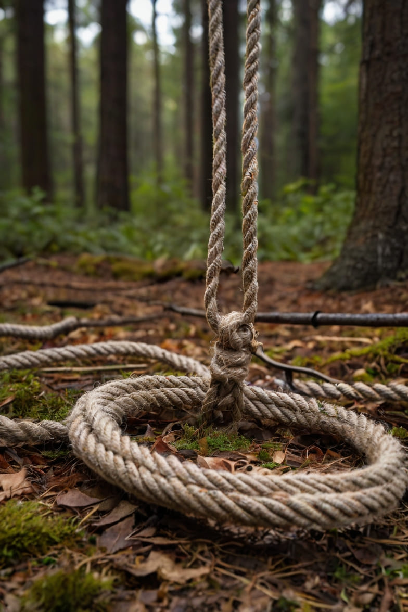
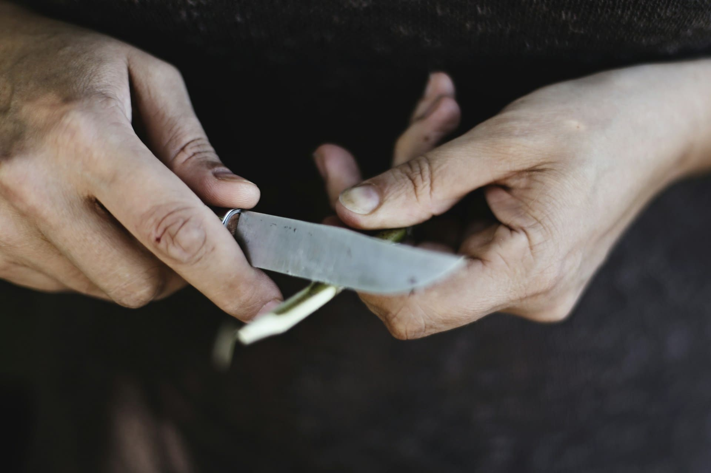
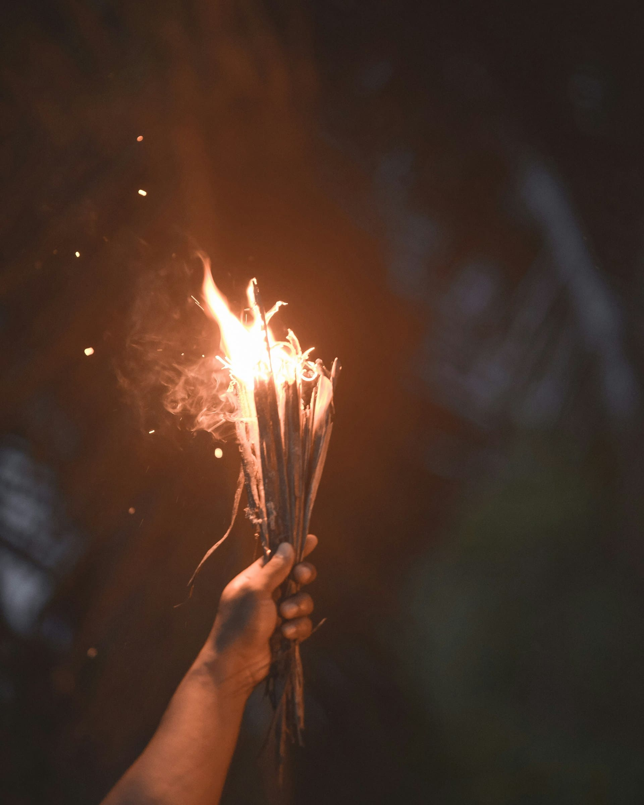

изделия для охоты
01Как сделать приспособления для охоты?
- Сеть для ловли: Для изготовления сети используйте верёвку. Для рамы и поплавков можно использовать дерево, а для груза — камни. Такая сеть поможет вам ловить рыбу или других мелких животных.
- Острога: Прямая палка, конец расщепи, вставь заострённые палочки крестом. Зафиксируй — получится 4 зубца. Можно дополнить верёвкой, чтобы не терять.
- Удочка: прямая ветка, на конце нить с крючоком — из кости, шипа, проволоки.
- Ловушка для рыбы: "бутылка" из ивовых прутьев с воронкой внутрь — рыба заплывёт, а выйти не сможет.
- Петля-ловушка: Гибкая ветка — как пружина. Петля затягивающаяся при натяжении из нитки/волокна. Спусковой механизм: В землю вбей короткую вертикальную палочку (10 см) с расщепом сверху. В расщеп вставь горизонтальную палочку, на которую будет натянут шнур от ветки. При нажатии/заде вания эта палочка выпадет, а ветка выстрелит и затянет петлю. Петля должна располагаться чётко на тропе зверя. Убедись, что при малейшем касании петля резко срывается и поднимается вверх. Ловушку замаскируй — зверь не должен его замечать. Важно: не оставляй запах — можно натереть ловушку землёй, сажей.
- Ловушка падающий груз: Подними груз с помощью рычага или подкопа. Сделай треугольный спусковой механизм из палок. Настрой так, чтобы малейшее движение сбивало систему.
- Ловушка яма с кольями: Выкопай яму — глубина не менее 1.5 м, ширина — по размеру животного, лучше 1.5 на 1.5 м. Вбей колья на дно ямы, заостри их — лучше всего под наклоном, чтобы было больше шансов нанести урон. Маскируй яму: Положи тонкие ветки поперёк. Сверху листья, трава, мох — должно выглядеть как обычный лесной пол. Проложи направляющий забор — в сторону ямы, чтобы животное шло нужным путём
- Копьё: Прямая палка, 1.5–2 метра. Один конец заострить об камень или уголь из костра. Закалить в огне (держать в жару, не в пламени — 5–10 мин). Для прочности: расщепи кончик и вставь острый камень или косточку, обвяжи верёвкой.
- Лук: Лук: упругая ветка (ясень, орешник), длиной около метра. Тетива: скрученные волокна крапивы, лыка, сухожилия. Стрелы: прямые веточки, каменный или костяной наконечник, оперение из листьев или мха.

изделия для готовки
02Как сделать приспособления для готовки?
- Огниво: Используйте кремень (имеет чёткие грани, коричневатые сколы, слегка блестящий на солнце) и углеродистую сталь (например, лезвие ножа, напильник, ржавый металл). Ударьте камнем по стали, чтобы вызвать искры, которые могут поджигать материалы.
- Нож: Найди кремень — откалывай об другой камень, пока не получится острый край. Можно вставить в расщеплённую палку и закрепить верёвкой = "рукоятка"
- Посуда: Из глины (найти у водоёмов), вылепить форму. Обжечь у костра (в стороне от пламени, в жару 2–3 часа).
- Фильтр: В ёмкости (например, банке) пробейте дно мелкими отверстиями, выложите ткань и засыпьте калёным песком или щебнем. После этого можно пропускать воду через такой фильтр для первичной очистки, а затем продезинфицировать воду (например, кипячением или использованием таблеток для очистки воды).
- Солнечный дестиллятор: Выкопай ямку глубиной 30–50 см и диаметром около 50 см. В центр поставь чистую ёмкость, куда будет стекать конденсат. Вокруг ёмкости вылей грязную воду, положи мокрые листья, траву или даже мочу — всё, что испаряется. ыНакрой яму прозрачной плёнкой или пакетом, натяни её плотно. В центр плёнки положи небольшой камень, чтобы получился наклон к центру — капли будут стекать в ёмкость. Принцип: Солнце нагревает содержимое ямы → влага испаряется → пар конденсируется на плёнке → капает в центр, в чистую ёмкость.

другие изделия
03Как сделать другие прспособления?
- Топор: Камень с острым краем или тяжёлый — обтёсанный. Вилка из дерева (раздвоенный конец). Закрепить камень клиньями из дерева и обвязать верёвкой или шкурой.
- Линза: Наполните пакет небольшим количеством воды, чтобы создать форму капли. Сфокусировав лучи света в одной точке, вы можете использовать их для поджигания материала.
- Компас: Для создания компаса, намагнитите иглу (например, через трение о магнитный камень) и положите её на воду. Игла будет указывать на север.
- Факел: Палка, обмотанная смолистой тканью или берестой. Обмакнуть в животный жир или смолу. Поджигать — держать подальше от лица.
- Верёвка: используйте волокна крапивы, лыко, сухожилия животных или лозу.
